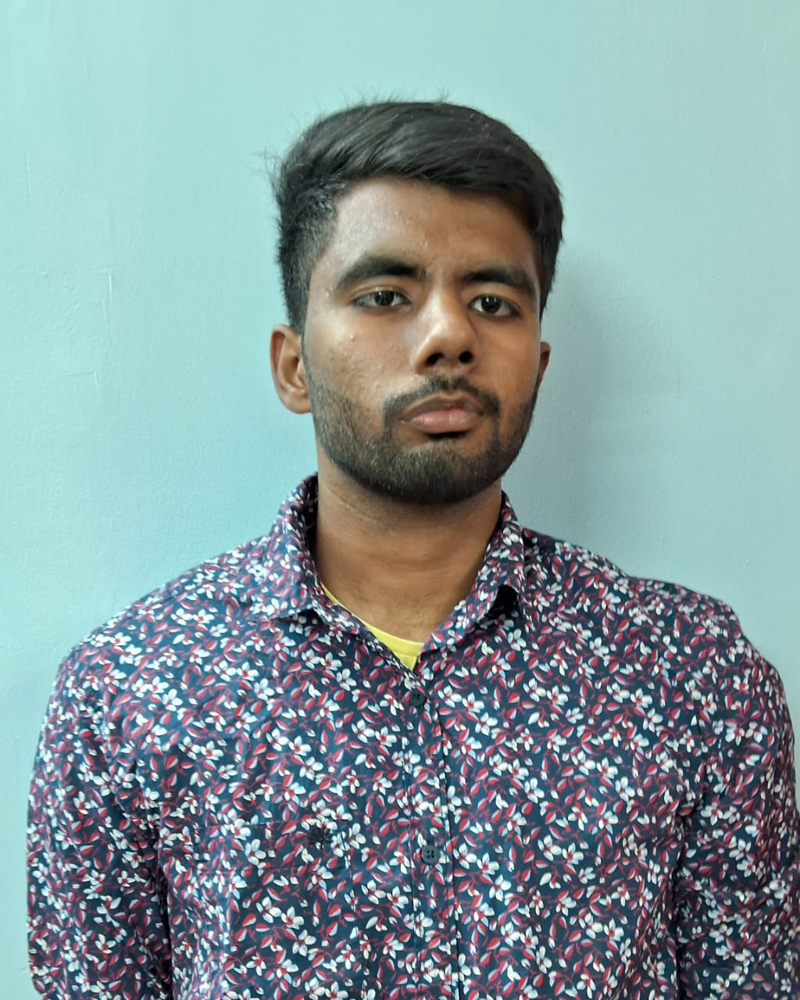

SRI AKASH K
Aspiring Data Analyst
About Me
I am a student with a strong interest in machine learning, computer vision, and data science.
I enjoy applying my programming and analytical skills to real-world problems and have developed
projects in areas such as heart disease prediction and object detection. I am constantly exploring
new tools and technologies to expand my knowledge and sharpen my skills.
Education
- Bachelor of Technology in Artificial Intelligence and Data Science – Indian Institute of Information Technology Sri City
- High School – Sri Chaitanya, Neelambur
Skills
- Programming Languages: Python (NumPy, Pandas, Matplotlib, Scikit-learn, TensorFlow)
- Computer Vision: OpenCV, image preprocessing, face/object detection
- Machine Learning & AI: Data preprocessing, model training, evaluation, prediction
Projects
-
AI Snake Game: An AI-powered Snake game where the snake autonomously navigates and maximizes score using intelligent algorithms.
-
Moving Object Detection: Detects and tracks moving objects in real-time from video streams using OpenCV.
-
Face Detection and Tracking: Real-time face detection and tracking system built with OpenCV and AI models.
-
Heart Disease Prediction: Predicts the likelihood of heart disease using clinical data with machine learning models.
-
Titanic Survival Prediction: Predicts passenger survival on the Titanic using data preprocessing and machine learning models.
Reflections
I enjoy solving problems using technology and data. My journey in machine learning and computer vision
has allowed me to build projects that not only improved my technical skills but also my ability to think
critically and creatively. I have learned the importance of asking the right questions, experimenting with
different approaches, and never giving up when faced with errors or challenges. I see every project as a
new opportunity to expand my skills and make meaningful contributions.
Achievements & Awards
- Participated in AI Masterclass at Novitech
- Participated in Data Analytics Masterclass at Novitech
- Participated in Machine Learning Masterclass at Novitech